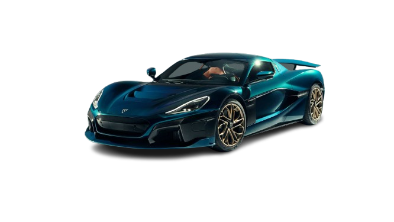
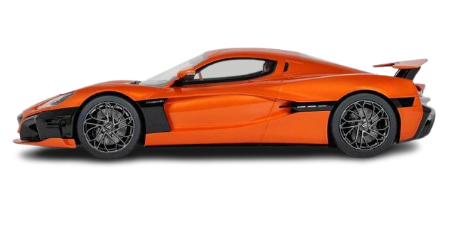

Rimac Nevera
The Rimac Nevera is a high-performance electric vehicle, known for its remarkable speed, cutting-edge technology, and luxurious design.
- 0-60 mph in 1.85 seconds
- Top speed: 258 mph
- Power: 1,914 horsepower
- Range: 340 miles
Top 3 Cars from Rimac
Rimac C_Two

The C_Two is a predecessor to the Nevera, boasting a striking design and performance metrics that redefine electric vehicles.
Rimac Concept_One

The Concept_One was Rimac's first production vehicle and set the stage for the future of electric hypercars.
Rimac Nevera GT
A more aggressive version of the Nevera, the GT offers enhanced performance features and luxury.